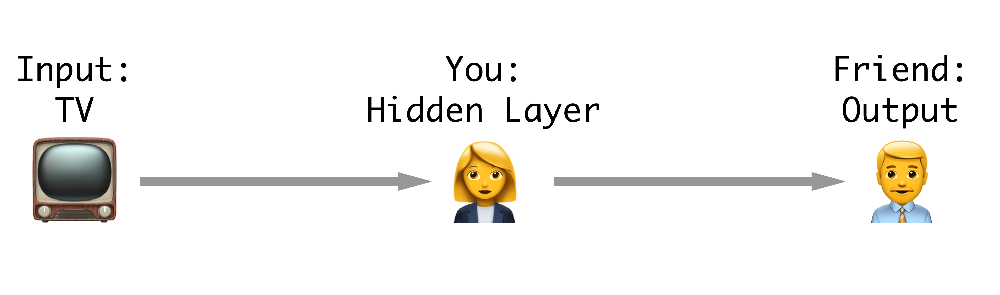
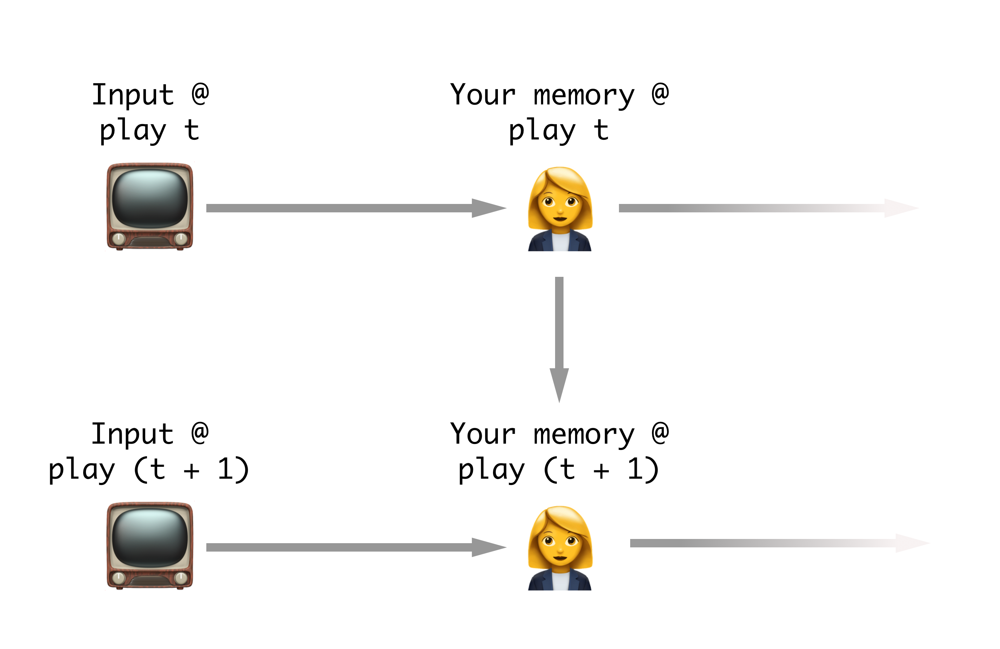

LSTM neural nets as told by baseball
Currently I am studying for my qualifying exams on which the topic is “using deep neural networks for classification of time series data.” One extremely popular neural net architecture for doing this is the LSTM, or Long Short Term Memory model. The LSTM is a relatively recent advance Introduced in 1997 by Hochreiter and Schmidhuber in the the class of networks known as Recurrent Neural Networks (RNNs).
My main problem when I was learning about LSTMs was the horrifically mathematical way the are first described.  The typical way an LSTM is first introduced. This is from The Beginers Guide to RNNs… Hope you’re an advanced beginner. Almost always the first introduction you get to them is a giant hairball diagram with a bunch of proprietary symbols and shapes accompanied by some equally confusing math equations. Personally, all this does is make me question my decision to go to grad school, not help me understand what’s going on. After struggling through a lot of these introductions however, I have come up with a way that I use to intuitively understand what LSTM networks do using a baseball analogy. Hopefully it helps you too.
The typical way an LSTM is first introduced. This is from The Beginers Guide to RNNs… Hope you’re an advanced beginner. Almost always the first introduction you get to them is a giant hairball diagram with a bunch of proprietary symbols and shapes accompanied by some equally confusing math equations. Personally, all this does is make me question my decision to go to grad school, not help me understand what’s going on. After struggling through a lot of these introductions however, I have come up with a way that I use to intuitively understand what LSTM networks do using a baseball analogy. Hopefully it helps you too.
Problem Setup
You and a friend are sitting in your house watching a baseball game. Your friend is a fair-weather baseball fan and really doesn’t care about the game’s details, just who’s winning. They decide that instead of wasting their time watching the game they can make animojis on their phone and just have you dictate the game to them.
In order to do this efficiently you need to devise a strategy that will allow you to give your friend what he needs to know, while keeping track of the game in your own head.
 How our baseball neural network is setup.
Quick RNN background
RNNs are neural networks that keep track of what they have seen and use that to aid their classification or regression output for a given element in a sequence. For instance, if you were modeling a sentence, an RNN would see the letters COO and then, because it remembers its context from the previous three letters, will predict L as the next letter. This is contrasted with a naive approach which would not remember the previously seen data and would always predict E because it’s the most common letter in the English language.
Fun fact: recently Google switched over their translation system to use LSTMs. Language translation is a particularly good usecase for these types of models as sometimes words in early parts of a sentence matter a lot in later parts, but they don’t always occur the same distance before. Thus having a flexible model that can keep track of what it’s seen helps a great deal in translation.
There are many problems with the simple implementations of RNNs that are way too complicated to go into here and not the point of this post. If you want to know more about them I would recommend any combination of original LSTM paper, this excelent blog post by Chris Olah, and the chapter on RNNs from Goodfellow et al.’s deep learning textbook. All that you need to know is that, the LSTM solved many of the issues associated with training RNNs by using some clever strategies, mainly their ability to remember and forget using “gates.”
 How our baseball RNN will work.
To recap, there are two main facts you need to remember in regards to RNNs (including their subset the LSTM):
- An RNN takes an input and passes that input through a ‘hidden’ layer before returning its output of interest.
- The hidden layers can communicate with each other through the sequence. Aka the hidden layer knows the values of itself at the previou time point.
Your strategy (aka an LSTM)
Your LSTM strategy for watching the game.
You decide to break your strategy for keeping your friend informed into three parts: what you care about, what you don’t care about anymore, and what your friend cares about.
Part 1: What you care about (the input gate)
Say a batter is up and he has two strikes. The next pitch comes in and he fouls it to right field. Since you can’t strike out on a foul ball this pitch essentially doesn’t matter to the current status of the game. Sure you could argue that it does in fact matter that the pitcher is more tired and the batter is more weary, but let’s be reasonable In the slot in your brain for keeping track of the batters risk of striking out you simply don’t change anything in response to this new information. What you have done is decided to supress the input of this new information.
Part 2: What information no longer matters (the forget gate)
Let’s continue with the current batter with two strikes. Say on the next pitch he hits a great fly to left field and the fielder misses it. He gets all the way to second for a double.  Of no importance, I just thought this was a nice looking gate. Source The previous knowledge that you were carrying with you, the fact that the count was two strikes, no longer is important to the game. Once a batter has gotten on base, even though he had two strikes before he got there that information no longer makes any difference to the game’s outcome. Because of this you decide you can forget this information because you will no longer need it.
Of no importance, I just thought this was a nice looking gate. Source The previous knowledge that you were carrying with you, the fact that the count was two strikes, no longer is important to the game. Once a batter has gotten on base, even though he had two strikes before he got there that information no longer makes any difference to the game’s outcome. Because of this you decide you can forget this information because you will no longer need it.
Part 3: What you tell your friend (the output gate)
Let’s stay with the play we considered for part 2. In this case the batter has made it to a base, and thus the state of the game has changed. For instance if a home run is hit now, there would be two runs instead of just one. Due to this, you have chosen to remember the fact that there is a runner on second base.  SourceHowever, since your friend doesn’t care about anything but the score of the game, he would gain nothing from you telling him this information, so you simply omit it in your report of the play. So, while you still know it’s important to the potential future score of the game, at this time it has not changed anything so you supress your output to your friend.
SourceHowever, since your friend doesn’t care about anything but the score of the game, he would gain nothing from you telling him this information, so you simply omit it in your report of the play. So, while you still know it’s important to the potential future score of the game, at this time it has not changed anything so you supress your output to your friend.
Recap
Using these simple steps to simultaneously keep track of the information that may be important for the future plays, while at the same time keeping your friend updated for the current play, you have essentially become the hidden layer in an LSTM RNN.
There are plenty of other nitty gritty details about what exactly goes on in an LSTM but what is the most important about how they work is their ‘gates.’ These gates help them efficiently keep track of dependencies in the outcome that are influenced by input events happening at flexible amounts of time before. Traditional RNNs simply take their previous knowledge and transfer it wholesale to themselves at the next time-point, which, as illustrated in part two, can be very wasteful, and hard to optimize.
 By far the easiest to parse technical diagram of the LSTM I’ve found. Source
By far the easiest to parse technical diagram of the LSTM I’ve found. Source
RNNs in general are fantastically powerful algorithms because of their flexibility to learn the patterns in time that are important. This contrasts with old school methods like sliding windows, where the model is only capable of looking backwards a set amount of time, which is bad if an event of interest is further back than that window, or if most of data contained in the window is not neccesary for the current situation.
I admit though that I wrote this article from the entirely unrealistic perspective of a person who has been reading literature on this for a good bit now, so it is very likely I glossed over some points that are critical to your grasp of the problem. If this happened, please don’t hesitate to send me angry messages on twitter or leave a comment below.

Randomly walking my way though a career in statistics